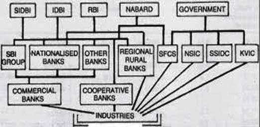
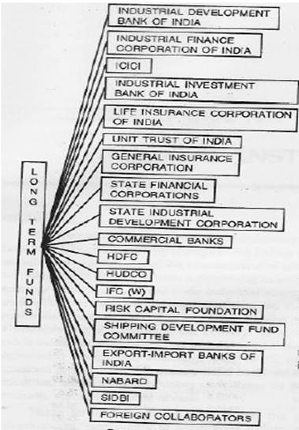
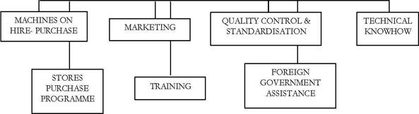
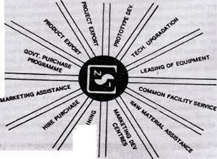
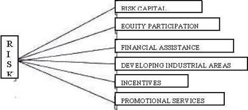

ARM402 :: Lecture 21 & 22 :: ROLE OF FINANCIAL INSTITUTIONS FOR FUNDING ENTERPRISES

Introduction
With the quickened pace of economic development under the impetus of the Five-Year Plans, the most striking change in the Indian economy has been the initiation of an industrial revolutionist and the reemergence of small-scale industries. Further, during the past decade, there has been a deepening as well as widening of the entrepreneurial structure as well as the small-scale preindustrial structure. Not only have the established small industries increased their installed capacity and output, but a wide range of new small industries has also come into being. During the last two decades, there is a boom of entrepreneurial activities in the country. Thus, in the field of capital-and product goods industries, enterprises manufacturing such items as machine tools, electrical and’ engineering equipment, chemicals etc., which provide the foundation for a self (sustained growth of the economy have been set-up. Amongst the consumer goods industries, small units producing such items as -bicycles, sewing machines, plastic products, etc. are forgoing ahead.
These far-reaching developments and the scale and scope of operation of entrepreneurs, particularly in small-scale industries, have brought to the fore the importance -of provision of administrative and institutional assistance at various levels.
Over the years, financial institutions are playing a key role in providing finance and counseling to the entrepreneurs to start new ventures as well as mode diversify and even rehabilitate sick enterprises. In this context, we shall discuss the scale and scope of operation of various development banks (institutions) that have been rendering financial assistance, directly or indirectly, to entrepreneurs and their various ventures. .
Development Function
Development being the function of capital, as the tempo of development grows NS, so does the requirement for capital. The need for capital is continuous and (also boundless. However, capitals is not only necessary for development’ but capital, (also generated by development. Economic progress creates its surpluses with which further deployment is achieved, often at an accelerated rate. India’s Five-Year Plans are a proof in themselves that substantially larger resources used is each successive plan same from the economic growth resulting from investment in the preceding plans. Only a relatively small part of the resources came from external sources though they were crucial to development. Similarly, in consonance with the development activities in the country, the development banks activities are on higher scale as well as diversified in multi-directional way.
Institutional Finance
With the launching of the Five Year Plans, in the absence of a sufficiently broad domestic capital market, there .was need for adopting and enlarging the institutional structure to meet the medium and long-term credit requirements of the industrial sector. It was in this context that the RBI took the initiative in setting-up statutory corporations at the all-India and’ regional levels to function as specialised financial agencies purveying term credit.

Institutional Framework for Industry
Institutional finance for -large, medium, small and tiny industries by commercial banks - the State Bank of India group, nationalized banks, private sector banks and development corporations which have been especially established to provide industrial finance. In addition, the Reserve Bank of India gives credit guarantees and the ECGC gives export guarantees to the small-scale sector. By its refinance operations, the Industrial Development Bank of India, too, plays a significant role in the promotion of the small scale-sector for it has enabled the SFCs SSIDC/SSIACS and commercial banks to extend a large quantum of financial assistance to this sector. The National Small Industries Corporation offers financial assistance is the form of its hire-purchase schemes.
This apart, a host of newly cropped up institutions such as mutual funds, lease companies, financial service institutions, investment companies, merchant banks, asset management companies etc. provide financial assistance and financial services to industries. Some of them go to’ the extent of conceiving a project and see through its progress till the end.
In India, long-term loans are provided for a host of financial institutions of the five all-India develop merits IDBI and SIDBI are apex banks providing refinance facilities to other institutions. Like-wise, NABARD is an apex bank for agricultural finance and Exim bank of export import trade. Then industrial development banks, special institutions, saving and investment institutions, financial service institutions and regulatory institutions. RBI, SEBI, and NSEIL are three regulatory bodies.
In the cumulative sanctions by AFIs up to end-March 1998, IDBI (including resource support to other FIs)’ claimed the largest share (33.6%), fo1l9wed by ICICI (25.7%), IFCI (11.1 %), SIDBI (8.2%) and LIC I (1.4%). UTI and LIC (including resource support to other Fls) accounted for 11.6% and 4.8% respectively, followed by GIC (1.7%). Of the state-level institutions, SFCs and SIDCs claimed 6.5% and 3.5% respectively.
The area of operation of development almost covers all key sectors of the economy, i.e., agriculture, small industries, rural industries medium and large industries, infrastructure, housing, export and import trade, shipping, ‘capital market stock exchange, saving, investment, insurance, credit guarantee, financial service etc. Special institutions have cropped up to foster development a special area of activities. The financial institutions have even setup institution to rehabilitate sick enterprises.
By and large’, a greater slice of domestic savings are mopped up by commercial banks (Rs. 4, 75,000 crores), Unit Trusts of India (Rs. 65,000 crores), Life Insurance Corporation (Rs. 90,000 crores), General Insurance (Rs. 20,000 crores), and mutual funds and other financial companies (Rs. 100,000 crores). Even IDBI, ICICI, SIDBI have commenced mopping up deposits from the public. The aggregate resources available for investment with financial institutions adds up to over 7,50,000 crores. Sources of funds (long-term funds) for development are given in the following figure.
Financial assistance to entrepreneurs is granted by commercial banks, State Financial Corporations, State Directorate of Industries, National Small Industries Corporation, state Small Industries Corporations, and - all-India - development banks.
Credit facilities granted, by commercial banks - and State Financial Corporations are covered under the- Credit Guarantee Scheme for Indus tries, which offers protection to credit institutions against possible loss on their lending to this sector.
Institutional agencies grant financial assistance to S$1all-scale industrial units for:
1. Participation in equity capital.
2. Acquisition of fixed assets by way of term loans; and
3. Working capital.

1. Industrial Finance Corporation of India (IFCI)
Incorporation and Purpose
The Industrial Finance Corporation of India (IFCI) was established in 1948 under an Act of Parliament with the object of providing medium and long-term credit to industrial concerns in India. IFCI transformed into a corporation from 21st May, 1993 to, provide greater flexibility to’ respond to the needs of the rapidly changing financial system.
Management
The Board of Directors consists of a whole-time Chairman and twelve directors. The Chairman is appointed by the Central Government after consultation with the lDBI. Two directors are nominated by the Central Government and four by the lDBI. Six Directors are elected by shareholders other than the IDBI.
Financial assistance provided by the IFCI can be in one or more of the following forms:
• Rupee and foreign currency term loans
• Underwriting of share and debenture issues
• Direct subscription to equity
• Guarantees
• Soft loans
• Equipment financing
Projects costing up to Rs. 300 lakh are financed by the State Financial Corporations, State’ Industrial Development Corporations and Commercial- banks under the refinance scheme of the: IDBI. Only projects costing in excess of Rs. 300 lakh are considered for: assistance by the JFCI..
Forms of Assistance
Section 23 of the IFCI Act outlines the types of activities, which the Corporation is authorised, to undertake. These are indicated below with the year in which it was authorised to undertake each type of activity shown within the brackets.
- Granting loans on subscribing to debentures repayable within a period not exceeding 25 years. (1948)
- Underwriting the issue of stock, shares, bonds or debentures by industrial concerns provided that it does not retain any shares, etc., which it may have had to take up in fulfillment of its underwriting liabilities beyond a period of 7 years except with the permission of the central Government (now the IDBI).
- Guaranteeing loans ——
- raised by industrial concerns, which are repayable within a period not exceeding 25 years and are floated in the market. (1948)
- raised by industrial concerns from scheduled banks or state cooperative banks (1960)
- Guaranteeing deferred payments due from any industrial concern
- In connection with the import of capital goods from outside India
- In connection with the purchase of capital goods within India
- Guaranteeing loans (with the prior approval of the Central Government) raised from, or credit managements made with, any bank or financial institution in any country outside India by Industrial concerns in foreign currency (1960)
- Acting as agent for the Central Government or, with its approval, for the International Bank for Reconstruction and Development (lBRD) in respect of loans granted or debentures subscribed by either of them (1952)
- Subscribing to the stock or shares of any industrial concern (1960)
Functions and Lending Policies
Any limited company or co-operative society incorporated and registered in India which is engaged, or proposes to engage itself, in the manufacture, preservation or processing of goods, or in the shipping, mining or hotel industry, or in the generation or distribution of electricity or any other form of power, is eligible for financial assistance from the Cooperation on the same basis as industrial projects in the’ private and joint sectors.
Public sector projects are also eligible for financial assistance from the Corporations on the. same basis as industrial projects in the private and joint sectors.
The assistance may take the form of long-term loans” both in rupees and foreign currencies, the underwriting of equity, preference and debenture issues; subscribing to equity, preference and debenture capital; guaranteeing of deferred payments in respect of machinery imported form abroad of purchased in India. And guaranteeing of loans raided in foreign currency from foreign financial institutions. Financial projects and for the expansion, diversification, renovation or modernization of existing ones.
Financial assistance on concessional terms is available for the setting-up of new industrial projects in industrially less developed districts in the States/Union Territories notified by the Central Government.
Sources of Funds
The main sources of funds of -the Corporation _ other than its own capital retained earnings, repayment of loans and sale of investments are borrowings from the market by the issue of bonds, loans from the Central Government and foreign credits.
In its development role, the Industrial Finance Corporation has undertaken various promotional activities. The resources for financing such activities come from the benevolent ‘Reserve Fund-which was created in terms of an amendment of the IFC Act in 1972, and from the allocation of the Interest Differential Funds by the Government. The Interest Differential Funds are received in the form of loans and grants on a 50:50 basis under an agreement entered into by the Government of India with the Government of the Federal Republic of Germany in respect of lines of credit from the Kreditarnstalt fur Wideraufbau allocated to the Corporation from time to time. The promotional activities undertaken by the Corporation - which are, no doubt, still modest- in their scope are in consonance with the measure which need to be taken to achieve the objective of broadening the entrepreneurial bases in the country, particularly in less developed areas. The promotional activities, undertaken by the Corporation are briefly reviewed here.
The Corporation’s Technical Assistance Scheme for training middle level executives of the State financial and development agencies and the senior executives of these organisations continues to elicit a good response because it has been found to be very useful. Since the inception of the scheme in 1971, 78 middle level executives from 33 state level institutions and 43 senior executives from 28 state level institutions have availed themselves of the scheme, which aims at acquainting them with the policies, procedures and practices of the Corporation.
New Promotional Schemes
In 1989, the Corporation framed two new schemes of promotional activities, which (encourage new entrepreneurs and technologists to set up their own industries, and which assist in the growth of indigenous technology and small industries. The scheme for encouraging the development of ancillary industries was liberalised.
The present positions is that IFCI has fourteen Promotional Schemes, of which eight are-consultancy fee subsidy schemes, four interest subsidy schemes and two entrepreneurship development schemes, as per details given below:
Consultancy Fee Subsidy Schemes
- Scheme of subsidy to small entrepreneurs in the Rural, cottage, tiny and small sectors for meeting cost of feasibility studies, etc.
- Scheme of subsidy for consultancy to industries relating to animal husbandry, dairy farming, poultry forming and fishing.
- Scheme of subsidy for consultancy to industries based on or related to agriculture, horticulture, sericulture and Pisciculture.
- Scheme of subsidy for promotion of ancillary and small-scale industries.
- Scheme of subsidy to new entrepreneurs for meeting cost to market research surveys.
- Scheme of subsidy for Providing Marketing Assistance to Small Scale Units.
- Scheme of subsidy for Consultancy on Use of Non-Conventional Sources of Energy and - Energy Conservation Measures.
- Scheme of Subsidy for Control of Pollution in the Village and Small Industries Sector.
- Own generation by way of repayment of past borrowings and plough-back of profits.
Interest Subsidy Schemes
- Scheme of Interest Subsidy for Self-Development and Self-Employment of Unemployed Young Persons.
- Scheme of Interest Subsidy for Women Entrepreneurs.
- Scheme of Interest Subsidy for Encouraging Quality Control’ Measures in Small Scale Sector.
- Scheme of Interest Subsidy for Encouraging the Adoption’ of Indigenous Technology.
Entrepreneurship Development Schemes
- Scheme for Encouraging Entrepreneurship Development in Tourism and Tourism-related Activities.
- Scheme for Encouraging Self-Employment amongst Persons Rendered Jobless due to Retrenchment or Rationalization in a Sick Industrial Unit in the’ Organised sector Undergoing a Process of Rehabilitation/Revival.
The Consultancy for Subsidy Schemes is aimed at providing subsidized consultancy services to industrial units, largely in Village and Small Industries’ (VSI) Sector through Technical Consultancy Organisations (TCOs). The Interest Subsidy Schemes are intended to provide encouragement to self-develop-ment and self. Employment to unemployed youths, women entrepreneurs adoption of quality control measures, amassing the indigenously available technology etc. The Entrepreneurship Development Schemes envisage ‘giving impetus to self-employ-ment in tourism related activities in the small scale sector, and help in mitigating the suffering of people, who have to face retrenchment due to implementation of modernization, rehabilitation and revival plans in the case of potentially viable sick units, by process of retaining or self employment avenues.
2. The Industrial Development Bank Of India (IDBI)
The industrial bank of India (IDBI) was established on 1 st July, 1964 under the industrial development back of India act, as a wholly owned subsidiary of the reserve bank of India. In terms of the public financial institutions laws (Amendment) Act, 1975, the ownership of the lDBI has been transferred to the central government with effect from 16 the February 1976. The most distinguishing feature of the lDBI is that It has been assigned the role of the principal financial institution for co-ordinating, in conformity with national priorities, the activities of the institutions engaged in financing, promotion or developing industry. The IDBI has been assigned a special role to play in regard to industrial development.
Objectives and Functions
- To serve as an apex institution for term finance for industry, to co-ordinate the working of institutions engaged in financing, promoting or developing industries and to assist in the development of these institutions.
- To plan, promote and develop industries to fill gaps in the industrial structure in the country.
- To provide technical and administrative assistance for promotion, management or expansion of industry.
- To undertake market and investment research and surveys as also technical and economics studies in connection with development of industry.
- To act as lender of last resort and to finance all types of industrial concerns which are engaged, or which propose to be engaged, in the manufacture, processing or preservation of goods, or in mining, shipping, transport, hotel industries, or in the generation distribution of power, in fishing or in providing shore’ fishing, or in the maintenance, repairs, testing or servicing of machinery or vehicles, vessels, etc., or for the setting-up of industrial estates. The Bank may also assist industrial concerns engaged in the research and development of any process or product or in providing special or technical knowledge or other services for the promotion of industrial growth. Besides, it provides finance or the export of engineering goods and service on deferred payment basis.
The IDBI has been playing a significant role in the promotion of small-scale industries. Its assistance has been channeled through its scheme for the refinance of industrial loans, and to a limited extent, through the Bills Rediscounting Scheme. Since its inception, the lost has been playing a significant role in the promotion of small scale industries.
Its assistance has been channeled through its scheme for the refinance of industrial loans, and to a limited extent, through the Bills Rediscounting Scheme Since its inception, the IDBI has been operating a special scheme of concessional assistance to the small-scale sector. The procedure in respect of loans to the small-scale sector has been put on a semi automatic basis under the liberalised refinance scheme (LRS). As a result of the progressive liberalisation and simplification of its refinance operations, its assistance to the small-scale sector has increased substantially since 1971-72. Its assistance to the small and medium industrial units flows through 18 SFCs and 28 SIDCs, commercial banks and regional rural banks.
IDBI Schemes
IDBI is having the following schemes for the benefit of enterprise and entrepreneurs in the small and medium scale sector;
Direct Assistance
Project finance scheme (loans, underwriting, direct subscription and guarantees); Project Finance Scheme (loans, underwriting, direct subscription and guarantees)
• Modernization Assistance Scheme for all industries;
• Textile Modernization Fund Scheme;
• Technical Development Fund Scheme;
• Venture Capital Fund Scheme;
• Energy Audit’ Subsidy’ Scheme;
• Equipment Finance for Energy Conservation Scheme;
• Equipment Finance Scheme;
• Foreign Currency Assistance Scheme.
Indirect Assistance
- Refinance Scheme for Industrial Loans for Small and Medium Industries;
- Refinance Schemes for Modernization and Rehabilitation of Small and Medium Industries;
- Equipment Refinance Scheme;
- Bills. Discounting/Rediscounting Scheme;
- Seed Capital Scheme;
- Scheme for Concessional Assistance for Development of No-Industry Districts and Other Backward Areas;
- Scheme for Concessional Assistance for Manufacture & Industrialisation of
- Renewable Energy Systems;
- Scheme for Investment Shares and Bonds of Other Financial Institutions.
Sources of Funds
- Capital Contribution from Government;
- Loan Capital from Government;
- Loan Capital from RBI out of National Industrial Credit (Long Term Operation) Fund created out of its annual profits;
- Borrowings by way of Government - guaranteed bonds from domestic market;
- Borrowings in foreign currency from international capital market;
- Deposits under Investment Deposit Account Scheme in lieu of investment allowance under Section 32-AB of Income-tax Act;
- 3-year lDBI Capital Bond Scheme.
Own generation by way of repayment of past borrowings and plough-back of profits.
Soft Loan Scheme
The IDBI extends soft loans to units in selected industry groups, namely, cotton textiles, jute, cement, sugar and specified engineering industries to enable them to overcome the backlog in modernization, replacement and renovation of plant and machinery so that they may achieve higher and more economic levels of production and improve their competitiveness. The scheme is operated in participation with the IFCI and the ICICI, with the overall responsibility vesting in the IDBI. The IFCI is the lead institution for jute and sugar industries, the ICICI for engineering and the IDBI for cotton textiles and cement industries.
The loans under the Soft Loan Scheme are extended on concessional terms not only in regard to the interest but also in regard to the promoter’s ‘contribution, debt equity ratio, initial moratorium and, repayment period. In pursuance of the decision taken by the Government of India, loans under this scheme have been exempted from the convertibility stipulation.
3. ICICI
(The Industrial Credit and Investment Corporation of India)
The ICICI (Industrial Credit and Investment Corporation of India) was conceived as a private sector development bank in 1955 with the primary function of providing development finance to the private sector. Its objectives now include:
- assisting in the creation, expansion and modernization of such enterprises;
- encouraging and promoting the participation of private capital, both internal and external, in ownership of industrial investment and the expansion of investment markets.
Apart from its head office at Mumbai, the ICICI has four regional offices located at Mumbai, Calcutta, Chennai and New Delhi.
Financial assistance is being provided by ICICI in the following forms:
- Rupee and foreign currency term loans
- Underwriting of share and debenture issues
- Direct subscription to equity
- Guarantees
- Soft loans
- Suppliers line of credit for promoting sale of industrial equipment on deferred payment terms
- Lease financing
- Financial Indo-US joint ventures in research and development.
In practice only such projects costing in excess of Rs. 300 lakhs are considered for financial assistance by the ICICI. However, for purpose of foreign currency loans, no minimum project cost restriction is imposed.
Finance for Industry
Over the past thirty years, the ICICI, in pursuit of its objective of promoting industrial development, has provided financial assistance in various forms, such as:
- Underwriting of public and private issues and offers of sale of industrial securities ordinary shares, preference shares, bonds and debenture stock;
- Direct subscription to such securities;
- Securing loans in rupees, repayable over periods up to 15 years.
- Providing similar loans in foreign currencies for the payment for imported capital equipment and technical services;
- Guaranteeing payments for credits made by others;
- Providing credit facilities to-manufacturers for the promotion of the sale of industrial equipment on deferred payment terms.
The primary purposes for which assistance is extended is the purchase of capital assets in the’ form of land, buildings -and machinery. Of the alternative types of assistance provided by the ICICI, the one best calculated to assure the success of enterprise in chosen in each case.
Any company with a limited liability (or the promoter of such a company), any sole proprietary concern, partnership firm or any cooperative society may approach the ICICI for assistance in financing a sound proposal for the establisl1me’nt, expansion or modernization of an industrial enterprise.
The applicant may be an Indian or foreigner; his plans may provide for invent in any part of India; he may require assistance in any form. He must, however, be prepared’ to make a reasonable contribution to’ the resources required for the implantation of his proposal. The enterprise should have, or should undertake to obtain, experienced management and expert technical personnel and advice. Special consideration is given to projects promoted by new entrepreneurs and those who desire to set up industries in backward areas.
There are neither firm limits to the size of the enterprise the ICICI is prepared to assist, nor is there a maximum or a minimum limit to the assistance that it may offer. In practice, the lower limit of the finance provided by the ICICI is set at Rs. 5 lakh because there are other institutions which provide assistance for smaller amounts. However, to meet the requirements of industry for loans in foreign currency, the ICICI may offer assistance for smaller amounts. However, to meet the requirements of industry for loans in foreign currency, the ICICI may offer assistance below this limit. At the upper end, prudence requires that it limit the proportion of its resources, which it can safely invest in a single enterprise. However, no proposal is too large for the ICICI to handle it is prepared to enlist the cooperation of other financial institutions, in India and abroad, to share in the investment.
In promoting industrial investment, the ICICI is anxious not only to invest, but also to encourage others to invest. Accordingly, it seeks to encourage other financial institutions and individuals, both Indian and - foreign, to co-operate with it in its investment and lending operations. .
In order to promote new industries, to assist in the expansion and modernization of existing industries, and to furnish technical and managerial assistance, the ICICI grants long term and medium term loans, subscribes to shares, underwrites new shares and debentures, guarantees loans form other private investment sources, and provides managerial and technical advice. ICICI also provides assistance byway of suppliers credit, equipment, leasing, installment sale and venture capital and renders merchant banking services. Technology, development and information company of India Ltd. (TBICI), established by ICICI in 1988, provides technological information and finances technology intensive development activities including commercial R&D schemes. It also manages the venture capital fund of Rs. 20 crores that ICICI had established along with UTI in 1988.
4. The National Bank for Agriculture and Rural Development
The Preamble to the National Bank for Agriculture and Rural Development Act 1981, sets out the objectives for establishing the ‘new institution. To quote, An Act to establish a bank to be known as the’ National Bank’ of Agriculture and Rural Development for providing credit for’ the’ promotion’ of agrict1lture, small-scale industries, cottage and village industries, handicrafts and other rural crafts and other allied economic activities in rural areas with a view to promoting integrated rural development and securing prosperity of rural areas, and for matters connected therewith or incidental thereto.
Establishment of the National Bank
The establishment of the National Bank for Agriculture and Rural Development (commonly known as ‘NABARD’ and referred as the National Bank in this book) was the outcome of the acceptance of the recommendation in “this behalf contained in the - “Interim “Report of the Committee to Review Arrangements for Institutional Credit for Agriculture and Rural Development constituted by the Bank in consultation with the Central Government in 1979. The Bill for setting up the institution was passed by the Parliament in December 1981 and the National Bank came into existence on July 12, 1982.
The Committee envisaged that the new apex bank would be an organisational service for providing undivided attention, forceful direction and pointed focus to the, credit problem arising out of the integrated approach to rural development. The committee recommended that the new bank take over from the Reserve Bank the overseeing of the entire rural credit system, including credit for rural artisans and village industries, and the statutory inspection of co-operative banks and Regional Rural Banks on an agency basis; the Bank continuing to retain its essential controls.
The new bank was to have organic links with the Reserve Bank by virtue of the latter contributing half of its share capital (the other half being contributed by the Central Government), and three members of the Central Board of Directors of the Reserve Bank being appointed on its board, besides a Deputy Governor of the Reserve Bank being appointed as its’ chairman. The Committee envisaged the role of the Reserve Bank as one” of spawning, fostering and nurturing the new bank, in much the same way as it did earlier in the case of the Agricultural Refinance and Development Corporation.
On its establishment, the National Bank has taken over the entire undertaking Of the” Agricultural Refinance and Development Corporation and has taken over from “ the- Reserve Bank its refinancing functions in relation to the State Cooperative Rural “, Banks. This Bank is now the-’coordinating agency in relation to the Central Government, planning Commission, state government institutions at all-India level and State level, engaged in the: development of small-scale industries, village.; and cottage industries, rural ‘crafts, etc., for giving effect to the various policies and programme relating to rural credit.
Capital and Management
The capital of the National Bank is Rs. 500 crores, subscribed by the Central Government and the Reserve Bank in equal proportions. In terms of the Act, the Board of Directors will consist of fifteen members to be appointed by the Central Government in consultations with the Reserve Bank may maintain and will comprise, besides the chairman and the managing director, three directors from the Central, Board of the Reserve Bank, three officials of the Central Government, two officials of the State Governments and five directors from among experts in rural economics, rural development, handicrafts and village and cottage industries, etc., and persons with experience in the working of co-operative banks and commercial banks. The Act provides for constitution by the Board of an Advisory Council consisting, of the directors of the National Bank and other persons having special knowledge of subjects “which is considered useful to the bank, to tender advice and discharge many functions allotted to it. In effect, the Advisory Council will perform functions similar to those entrusted to the Agricultural Credit Board set up by the Reserve Bank.
Operations
The National’ Bank is empowered to provide short-term refinance assistance for’ periods ‘not exceeding 18 months to State co-operative banks, Regional Rural Banks and any financial institutions approved by the Reserve Bank in this behalf, for a wide range of purposes, including marketing and trading, relating to rural economy. These short-term loans granted to State cooperative banks and Regional Rural Banks, in to far as they relate to the financing of agricultural operations or marketing of crops, can be converted by the National Bank into medium term loans for periods not exceeding seven years under conditions of drought, famine or other financing of agricultural operations or marketing of crops, can be converted by the National Bank into medium term loans for periods not exceeding seven years under conditions of drought, famine or other natural calamities, military operations or enemy action.
Likewise, the National Bank may also provide assistance by way of loans and advances up to seven years to the financing institutions where it is satisfied that owing unforeseen circumstances the rescheduling of any short-term loans and advances made to artisans, small-scale industries, village and cottage industries etc., by the financing institutions is necessary. The, National Bank can grant medium-term loans to the State cooperative batiks and Regional Rural Banks for periods extending from 18 months to 7 years for agriculture and rural development and such other purposes as may be determined by it from title to time subject, in the case of loans to State co-operative banks, to their, being ‘fully guaranteed by the State Governments as to the repayment of principal and payment of interest. Such guarantees can, however, be waived by the National Bank in certain circumstances.
The national bank is empowered to provide by way of refinance assistance, long term loans extending up to a maximum period of 25 years including the period of rescheduling of such loans, to the state land development banks, regional rural banks, scheduled commercial banks, state co-operative banks or any other financial institutions approved by the reserve banks, for the purpose of making investment loans, as well as for give short term loans along with long term loans where such composite loans are considered necessary. Loans for periods not exceeding 20 years can be made to the state governments to enable them to subscribe directly or indirectly to the share capital of co-operative credit societies. Moreover, the new bank can contribute to the share capital or invest in the securities of any institution concerned with agriculture and rural development.
The outstanding amounts, as on the date of transfer of business to the national bank, in respect of loans and advances granted by the Reserve Bank to the state co-operative banks and regional rural banks under section 17 of the reserve bank of India act [except under sub-section (4) (a) there of have been transferred to that bank. Consequently, these loans and advances are repayable by the national bank to the reserve bank (see also chapter 9). The outstanding loans and advances granted by the Reserve Bank out of the National Agricultural Credit (Long Term Operations) Fund and the National. Agricultural Credit (Stabilization) Fund to the State Governments, State co-operative banks and the Agricultural Refinance and Development Corporation have been transferred to the National Bank.
Resources
For its short-term operations, the National Bank will borrow funds from the Reserve Bank in the form of a line of credit under Section 17 (4E) of the Reserve bank of India Act, which permitted the Reserve Bank to grant short-term loans to the Agricultural Refinance and Development Corporation earlier, and which has now been amended suitably by the National Bank for Agriculture and Rural Development Act. For its term loan operations, the National Bank will draw funds, as the Corporation was doing earlier, from the Central Government, the World Bank/IDA and other multilateral and bilateral aid agencies the market and the National Rural Credit (Long Term Operations).
Fund that it has established. To this Fund has been transferred the balance in the National Agricultural Credit (Long Term Operations). Fund maintained by the Reserve Bank. Further contributions would be made annually to the new Fund by the Reserve Bank, in addition to the contributions by the National Bank itself. Provision has beef} made also for the Central Government and the State Governments to contribute to this Fund from time to time.
The balance in the National Agriculture Credit (Stabilisation) fund has been similarly transferred by the Reserve Bank to the National Bank for credit to the newly established National natural Credit (Stabilisation). Fund which will be maintained by annual contributions by both the Reserve Bank and the National Bank as well as by contributions from the Central and state Governments from time to time.
The methods of raising funds include sale of bonds and debentures, direct borrowing, acceptance of deposits, and receipt of gifts, grants, etc. the national bank may borrow foreign currency form any bank or financial institution in India or abroad with the approval of the central government which will guarantee such loans.
5. The Small Industries Development Bank of India (SIDBI)
The idea of setting up small industries development bank of India (SIDBI), in response to a long standing domain form the small scale sector as an apex level national institution for promotion, financing and development of industries in the small scale sector, embodied an opportunity to set up proactive, responsive and forward looking institution to serve the current and emerging needs of small scale industries in the country. As a precursor to the setting up of the new institution, the small industries development fund was cleared by industrial development fund was created by industrial development bank of India (IDBI) in 1986 exclusively for refinancing, bills rediscounting and equity support to the small castle sector.
The outstanding portfolio of the order of Rs. 4200 crore from IDBI was transferred to SIDBI in March 1990. SIDBI started off from a strong base; percentage of IDBI, banking of a special statute, the small industries development bank of India act of 1989, a large capital base of Rs, 450 crore, availability of experienced manpower endowed with development banking skills carved out of IDBIs professional staff and ready availability of a cast network of institutional infrastructure and enduring financial linkages with state financial corporations (SFCs), commercial banks and other institutions; all these augured well for the growth of the nascent institution.’ SIDBI ‘ became operational on April 2, 1990.
The Environment
Indian economy has been in transition for most part of the last five years: the industrial policy, fiscal policy, public sector policy, foreign investment policy, trade policy and monetary and credit policies have been in various stages of liberalisation. Decontrol, deregulation and delicensing have given enormous scope for private initiative and market forces to come to play. New relationships within and between different sectors in the economy are being evolved; the small-scale sector has been an important constituent of such a liberalisation in the country, Government of India formulated a set of new policies aimed at harnessing the potential of the small-scale sector in August 1991 a year and-half after the establishment of SIDBI. The prescriptions of the policy focused at removal of implements affecting the growth of small-scale sector together With consolidation of the strengths, in the context of the emerging economic order. SIDBI has been refining its strategies and business policies in alignment with the policy, charges that have been taking place at the national level.
Operational Strategy
Stepping up of flow of credit to the units in the small scale sector through direct and indirect financing mechanisms and ensuring speedy disbursement have remained the, main plank of the operational strategy of SIDBI. Over the years, the share of direct assistance in the total assistance has steadily gone up.
Share: %
|
1990-91 |
1991-91 |
1992-93 |
1993-94 |
1994-95 |
1995-96 |
1996-97 |
1997-98 |
Indirect Direct assistance |
95 5 |
91 9 |
79 21 |
59 41 |
41 59 |
66 34 |
64 36 |
64 36 |
Shift in Business Mix
The new schemes designed and implemented were directed at filling the gaps in the existing credit delivery system focusing on new target groups and activities. These are targeted at addressing some of the major problems of SSIs, in areas such as marketing, infrastructure development, delayed realization of bills, ancillarisation, obsolescence of technology, quality improvement, export financing and venture capital assistance. The terms of assistance under various schemes have been substantially liberalised based on ongoing review process. The procedures have been simplified with gradual decentralization and progressive levels of operational efficiency and better customer service.
To mitigate the difficulties faced by SSIs on account of delayed payments, two factoring companies, viz., SBI factors and commercial services Pvt. Ltd. And can bank factors Ltd. have been established with SIDBI as a partner with 20% shareholding, SIDBI has enlarged the list of institutional member of over the counter exchange of India (OTCEI). This facilitates SSIs to access capital market through the route of OTCEI in raising resources in a cost-effective manner. SIDBI has overall productivity, product quality levels and process standards in such clusters. Significant achievements made in these spheres will be buttressed with new initiatives in the years to come.
6. Industrial Investment Bank of India
The Industrial Investment Bank of India (IIBI) was established in 1985 under the IRBI Act, 1984 on reconstitution of the erstwhile Industrial Reconstruction Corporation of India as the principal credit and reconstruction agency to, undertake reconstruction and rehabilitation of sick and closed industrial units in the country. IRBI was converted into a full-fledged all-purpose development institution as IIBI on 17.03.97. The scope of IIBIs financing activities has widened with the withdrawal of the Government stipulation that 60% of its portfolio should consist of ‘ sick companies; IIBI now finances all industrial projects like any other financial institution.
IIBI extends loans and advances to industrial concerns, underwrites stocks, shares, bonds, and debentures and provides guarantees, for loans/deferred payments. It provides finance for acquisition of equipment and makes available machinery and other equipment on lease or hire purchase basis. It also provides infrastructure facilities, consultancy, managerial and merchant banking services. During 1993-94, as a part of its merchant banking services, IRSI ventured into issue management activities for the first time. It also took several steps to re-orient its business strategy in response to the emerging environment and ongoing changes in the financial sector by introducing newer products for financing. IIBI has envisaged the setting up of a Special Fund, viz., Reconstruction Assistance Fund to meet special financial needs of ‘ assisted medium and large-scale units for their revival and rehabilitation which cannot be met from banks and’ financial institutions under normal conditions.
7. Life Insurance Corporation of India
The Life Insurance Corporation of India. (LIC) was set up under the LIC Act in 1956, as a wholly-owned Corporation of the Government of India, on nationalization of the life insurance business in the country. LIC took over the life insurance business from private companies to carry on the business and deploy the funds in accordance with the Plan priorities. UC operates a variety of schemes so as to extend social security to various segments of society and for the benefit of individuals and groups from the urban -and rural areas. The Committee on Reforms in the Insurance Sector set up by the Government has recommended privatization and restructuring of UC with Government -retaining 50% stake. The Committee has also suggested that foreign companies be’ allowed to conduct life insurance business in the country through joint ventures with India partners.
According to the investment policy of LIC, out of the accretion to its Controlled Fund, not less than 75% has to be invested in Central and State Government securities including Government-guaranteed marketable securities in the form of shares, bonds and debentures. UC extends loans for the development of socially-oriented sectors and infrastructure, facilities like housing, rural electrification, water supply, sewerage and provides financial assistance to the corporate sector by way of term loans and underwriting/direct- subscription to shares and debentures. UC also extends resource support to other financial institutions by way of subscription to their shares and bonds and also by way of term loans.
8. General Insurance Corporation of India
The General Insurance Corporation of India (GIC) was established in January 1973 on nationalization of general insurance companies in the country. GIC has four subsidiaries, viz., National Insurance Co. Ltd., New India Assurance Co. Ltd., Oriental Fire & General Insurance Co. Ltd. and United India Insurance Co. Ltd. GIC and its subsidiaries operate a number of insurance schemes to meet the diverse and emerging needs of various segments of society. In the recent past, GIC and its subsidiaries devised several need-based covers to keep pace with the new liberalized economic environment. The investment policies of GIC and its subsidiaries have been evolved within the ambit of the provision 27(B) of the Insurance Act 1938 and guidelines issued by the Government from time to time. According to Government guidelines, 70% of the annual accretions to their investible funds are required to be invested in socially oriented sectors of the economy. Since April 1976, GIC has been participating with other financial institutions in extending term loans to industrial undertakings and providing facilities for underwriting/direct subscription to their shares and debentures.
9. Export-Import Bank of India
The Export Import Bank of India (Exim Bank) was set up on January 1, 1982 by an Act of Parliament as the principal financial institution for promotion and financing of India’s international trade. Exim Bank finances exporters and importers, co-ordinates the working of institution engaged in financing expert and import of goods and services, finances export-oriented units and undertakes promotional activities necessary for -international trade. It has a menu of 23 major programmes to meet the needs of different customer groups, viz., Indian exporters overseas entities and commercial banks. Exporters can avail of pre-shipment credit, suppliers credit, and overseas investment finance; export product development loans, loans for export marketing, bulk import finance and investment’ vendors development finance. Foreign Governments and agencies are offered buyers’ credit and lines of credit. To commercial banks in India, Exim Bank offers export bills rediscounting facility, refinance of suppliers; credit and refining of term loans in) respect of export-oriented units. It also participates in guarantees issued by commercial banks on behalf of Indian project exporters.
Besides providing finance, EXIM Bank promotes exports through advisory and information services to exporters on procurement practices and bidding procedures of multilateral institutions, country risk analysis, merchant banking and marketing focused on catalyzing exports of non-traditional products to developed countries.
10. Khadi & Village Industries Commission
The Khadi and Village Industries Commission (KVIC), established by an Act of Parliament in 1956, is engaged in the development of khadi and village industries in rural areas. It has under its purview 26 village, industries besides khadi. After amendment to the KVIC Act in July 1987, the scope for coverage of activities was widened’ and as a consequence 70 more new village industries were identified and brought under its fold for implementation. The main objectives of the KVIC are providing employment in rural areas, skill improvement, transfer of technology, building up of strong rural community base and rural industrialisation. The significant characteristics of khadi and village industries under the purview of KVIC lie in their ability to use locally available raw materials, local skills, local markets, low per capita investment, simple techniques of production, which can be easily adopted by the rural people, short gestation period and above all production of consumer goods. KVI activities serve the poorest of the poor comprising scheduled’ castes, scheduled tribes, women, physically handicapped and minority communities in difficult, inaccessible hill and border areas.
The development programmes of khadi and villages industries are implemented through 30 State Khadi and Village Industries Boards which are statutory organisations, set-up under State legislation, 2,320 institutions registered under Societies Registration Act, 1860 and 29,813 Cooperative Societies registered under State Co-operative Societies Act. KVIC also assists individuals through State KVI Boards. KVI programmes now cover more than 2.1 lakh villages in the country.
Some of the notable developments in KVI activities during 199192 are extension of special programme aimed at intensive development of KVI through area approach under tie up with District Rural Development Authority (DRDA) to more number of districts, improvement and up gradation of KVI technology and quality of products, establishment of linkage with an export company for exporting KVI technology on hand-made paper and gur khandsari on turn-key basis, initiation of steps for tapping distribution network of big’ business houses for marketing KVI products, introduction of ‘fabric-painted Khadi ready-made garments, development of modified version of new model charkha by replacing all its metal parts with high quality nylon and reinforced fibre material and development of mini. Honey processing unit.
11. National Small Industries Corporation Ltd.
The National Small industries Corporation Ltd. (NSIC) was ‘setup ‘by the Government of India in 1955 with the objective of promoting and developing small scale industries in the country. Various activities undertaken by NSIC include supply of indigenous and imported machines on easy hire-purchase and lease terms, marketing of the products of small industries on consortia _basis, export marketing of small industries products, developing export worthiness of small-scale units, enlistment of small scale units for participation in Government stores purchase programme, development and modernization of prototypes of machines, equipment and tools, supply and distribution of indigenous and imported raw materials, training in various technical trades and co-operation with other developing countries in setting-up of small scale projects on turn-key basis.
Activities of National Small Industries Corporation (NSIC)
Formerly, the Corporation had four subsidiary corporations at Delhi, Mumbai, Calcutta and Chennai. However, since 1961, all the subsidiary corporations have been amalgamated with the main Corporation, and three Branch Offices have been set-up at Mumbai, Calcutta and Chennai. The Delhi subsidiary corporation has been merged with the parent Corporation, and its work is looked after by a separate Delhi Cell setup in it. The National Small Industries Corporation provides a complete package of financial assistance and support in the following areas:
- Supply of both indigenous and imported machines on easy hire-purchase terms. Special concessional terms have been introduced for units promoted by entrepreneurs from weaker sections of the society, women entrepreneurs, ex-servicemen and those units located in the backward areas.
- Marketing of small industries products within the country.
- Export of Small Industries products and developing export worthiness of. Small Scale Units.
- Enlisting competent units and facilitating their participation in Government Stores Purchase Programme.
- Developing prototypes of machines,’ ‘equipment and tools which are then passed on to Small-Scale Units for commercial production:
- Technical training several industrial trades, with a view to create technical culture in the young entrepreneurs. .
- Development and up gradation of technology and implementation of modernization programmes.
- Supply and. distribution of indigenous and improved raw materials.
- Supply of both indigenous and imported machines on easy lease terms to existing units for diversification and modernization.
- Providing of Common Facilities through Prototype Development & Training Centres.
- Setting-up Small-Scale Industries in other developing countries on turnkey basis.
NSIC

With a view to giving a fillip to development efforts and to supplement the activities of State Small Industries Corporations and District Industries Service Institutes, the NSIC has opened its offices in some of the States in which the (NSIC) Corporation has been hitherto under-represented. In the central region, offices have been opened in Bhopal and Raipur in Madhya Pradesh. Four development executives and six field inspectors have been, recently posted in the backward areas of the western region to serve as “contact points” and to work in close co-operation with DICs and other developmental agencies in the area. Of these, three field inspectors have been posted in Raigad, Ratnagiri, Satara, Yeomen, Chandrapur, Bhandara, Buldhana, Aurangabad, Nanded, Seed, Osmanabad, etc. all backward districts in Maharashtra.

A Unique Package of Assistance for Small Entrepreneurs.
The NSIC has taken up the challenging task of promoting and developing small industries almost from the scratch and has adopted an “integratedapproach” to achieve its socio-economic objectives. It has created a proper “industrial” atmosphere and has infused confidence in the small entrepreneurs to prepare schemes for the manufacture of products or identify the balancing equipment for purposes of modernization and or diversification. The small unit, because it is small, is always short of resources. The NSIC therefore, supplies machinery and equipment, marketing inputs and technical support to small units. And so the seedling comes up as a “factory” which provides jobs for the unemployed or underemployed.
Over the years and particularly during this decade, the NSIC, with its deliberate and concentrated efforts, has developed an unsurpassed reputation of an effective and efficient nodal agency for providing assistance to the vibrant Small-Scale sector. All these years, through, its dynamic approach and the package of assistance, it has been significantly contributing to the development of entrepreneurs, building up Of’ strong industrial base, spreading of technical culture, promoting balanced regional growth, development of rural and backward areas, etc. as well as in employment generation, in all parts of the country.
12. State Industrial Development Corporations
The State Industrial Development Corporations (SIDCs) were established under the Company Act, 1956. in the sixties and early seventies as wholly-owned State Government undertakings for promotion and development of medium and large industries. SIDCs act as catalysts for industrial development and provide impetus to further investment in their respective States. SIDCs provide assistance by way of term loans, underwriting and direct subscription to shares/debentures and guarantees. They undertake a variety of promotional activities such as preparation of feasibility reports, industrial potential surveys, entrepreneurship development programmes and developing industrial areas/estates. SIDCs’ are also involved in setting up of medium an large industrial projects in the joint sector in collaboration with private entrepreneurs or as wholly owned subsidiaries. The SIDC’s activities have now widened to include equipment leasing, providing tax benefits under State Government’s Package Scheme of Incentives, merchant banking services and setting-up of mutual funds. Some of the SIDCs also offer a package of developmental services such as technical guidance, assistance in plant location and coordination with other agencies.
Of the 28 SIDCs operating in the country, nine are twin-function SDICs functioning also as SFCs to provide assistance to small-scale units as well as act as promotional agencies. The {twin-function SIDCs .are in Arunachal Pradesh, Manipur, Meghalaya, Mizoram, Nagaland, Tripura, Goa, Pond cherry and Sikkim. Seven SIDCs are also involved in infrastructure development and other extensions services for the swell sector.
The SIDCs are agent of IDBI and SIDB for operating its seed capital scheme: Under the scheme, equity type assistance is provided to deserving first generation entrepreneurs who possess necessary skills but lack adequate resources required towards promoter’s contribution.
The major functions of these Corporations include:
- Providing risk capital to entrepreneurs by way of equity participation and seed capital assistance;
- Grant of financial assistance to industrial units by way of loans, guarantees and of late, lease finance by some Corporations;
- Administering incentive schemes of Central/State Governments;
- Promotional activities such as identification of project ideas through industrial potential surveys, preparation of feasibility reports, selection and training of entrepreneurs; and
- Developing industrial areas/estates by providing infrastructure facilities.
Since the actual range of activities being undertaken by individual SIDC depends upon the specific responsibilities entrusted by the respective State/Union Territory, there is considerable diversity in activities among the different SIDCs.

Functions of SIDCs
13. State Small Industries DevelopmentCorporations
The State Small Industries Development Corporations (SSIDCs) established under the Companies Act, 1956, are State Government undertakings, responsible for catering to the needs of the small, tiny and cottage industries in the State/Union Territories under their justification. SSIDCs enjoy operational flexibility and can undertake a variety of activities for development of the small sector. As at present, 18 SSIDCs are in operation.
Some of the important activities undertaken by SSIDCs includes:
(i) procurement and distribution of scarce raw materials, (ii)supply of machinery on hire-purchase basis, (iii) providing assistance for marketing of the products of small scale units, (iv) construction of industrial estates/sheds, providing allied infrastructure facilities and their maintenance, (v) extending seed capital assistance on behalf of the State Governments, and (vi) providing management assistance to production units.
A change in the role of SSIDCs has been prompted by the new Industrial Policy. SSIDCs are gearing up to change themselves from raw material distributors to organisations that will take care of various aspects of small industry development, especially marketing. SSIDCs would, thus, help the tiny and small industries increase their market share. The new policy calls for establishment of counseling and common testing facilities and provision of a mechanism to allow corporation of the latest technology in the small sector. SSIDCs are also planning to set-up centres for display of/and information dissemination on SSI products, and for providing small office spaces for SSIs in need.
Information for the analysis/discussion that follows, pertains to 11 SSIDCs located in Andhra Pradesh, Assam, Bihar, Goa, Gujarat, Jammu & Kashmir, Himachal Pradesh, Kerala, Punjab, Rajas than and Tamil Nadu.
14. State Financial Corporations
State Financial Corporations (SFCs), operating at the State-level, form an integral part or the development financing system in the country. They function with the objective of financing and. promoting small and medium enterprises for achieving balanced regional socio-economic growth, catalyzing higher investment; generating greater employment opportunities and widening the ownership base of industry.
At present, there are 18 SFCs in the country, 17 of which were set up under the SFCs Act, 1951. Tamil Nadu Industrial lnvestment Corporation Ltd., set up in 1949 under the Companies Act as Madras Industrial Investment Corporation also functions as a full-fledged SFC. SFCs extend financial assistance to industrial units by way of term loans, direct subscription to equity/debentures, guarantees, and discounting of bills of exchange. SFCs operate a number of schemes of refinance and equity type of assistance formulated by IOBI/SIDBI which include schemes for artisans, special target groups like SC/ST, women, ex-servicemen, physical handicapped, etc. and for transport operators, setting up hotels, tourism-related activities, hospitals and nursing homes, etc. Over the years, the SFCs have extended their activities and coverage of assistance.
Concerns Eligible for Assistance
Industrial concerns eligible for financial accommodation under the State Financial Corporation Act, 1951 are those which are engaged in the following activities (a) Manufacture of goods; (b) preservation of goods; (c) processing of goods; (d) mining; (e) generation of distribution of electricity or any other form of power; (f) hotel industry; (g) transport of passenger or goods by road or by water or by air; (h) maintenance; repair, testing or servicing of machinery of any description of vehicles or vessels or motor boats or, trawlers or tractors; (i) assembling, repairing or packing any partied with the aid of machinery or power;. (j) the development of any contiguous area of land as an industrial estate; (k) fishing or providing shore facilities for fishing or maintenance thereof; (l) providing special or technical knowledge or other services for the promotion of industrial growth.
SFCs extend financial assistance to industrial units buy way of term loans, direct subscription to equity/debentures, guarantees and discounting of bills of exchange. SFCs operate a number’ of schemes of refinance - and equity type of assistance formulated by IDBI/SIDBI which include schemes for artisans, social target groups like SC/ST, women, ex-servicemen, physically handicapped, etc. and for transport operators, setting up hotels, tourism-related activities, hospitals and nursing homes, etc.
Objectives and Functions
- The main function is to provide term loans for the acquisition of land, building, plant and machinery, pre-ops and other assets.
- Promotion of self-employment.
- To encourage new and technically/professionally qualified women entrepreneurs in setting up industrial projects.
- To finance expansion, modernization and up gradation of technology in the existing units.
- To provide financial assistance for the rehabilitation of sick units financed by the Delhi Financial Corporation.
- To assist for the promotion or expansion of industry by the rural and urban artisans.
- To provide financial assistance for transport vehicles strictly for captive use, depending on the requirement of the projects.
- Providing seed capital assistance under the scheme of Industrial Development Bank of India.
- Providing soft-term loan to cover the equity gap to help small-scale industrial units.
- Undertaking the various promotional activities, including the organisation of entrepreneurial development programmes and seminars etc.
- Interest subsidy for self-development, self-employment of. young persons, adoption of indigenous technology in small and medium sector and encouraging quality control measures in small-scale industry is also admissible to the extent of Rs. 5 lakhs.
- To promote development institutions in the state/region which will accelerate the process of socio-economic growth
Assistance
The state financial institutions offer a package of assistance to entrepreneurs to enable them to translate their project idea into a reality. The package of assistance may be broadly classified into two types of services, developmental and financial. In addition, some SFCs’ also implement package schemes of incentives to motivate and encourage entrepreneurs.
Commercial Banks
The Scheduled Commercial Banks (SCBs) in the country (299) comprise State Bank of India and its associate-banks (8), nationalized banks (19), private sector banks (34:) regional rural’ banks (196) and foreign banks, (42). During 1994-95, ten more banks were given the status of SCBs status entitles the banks to avail of certain over by Bank of India was excluded. The SCB status entitles the banks to avail of certain facilities from RBI such as refinance, loans and advances as also grand of auth6rised dealers licenses to handle foreign exchange business. Correspondingly, banks also have certain obligations such as maintenance of Cash Reserve Ratio, Statutory Equinity Ratio and follow various banking regulations. As on March 31, 1998, the total number of branches of SCBs stood at 64,267; of these 32,890 (51.1 %) of the total) were in rural areas.
Total outstanding gross bank credit (food and non-food) at Rs. 3,24,079 crore on March 31, 1998 was higher by 16.4% over the outstanding credit of Rs. 2,78,402 crore as on March 18, 1997 mainly due to marked expansion in non-food credit which rise by 15.1 % to Rs. 3,11,594 crore forming 96.1 % of total outstandinggross bank credit as against 93.4% on March 18, 1994. Outstanding investments of banks in Government and other approved securities stood at Rs. 2,18,705 crore as on March 31, 1998. The outstanding gross bank credit to industrial sector at Rs. 1,61,038 crore as on March 31, 1998 was higher by 16.2% over Rs. 1,38,548 crore on March 18,1997.
| Download this lecture as PDF here |